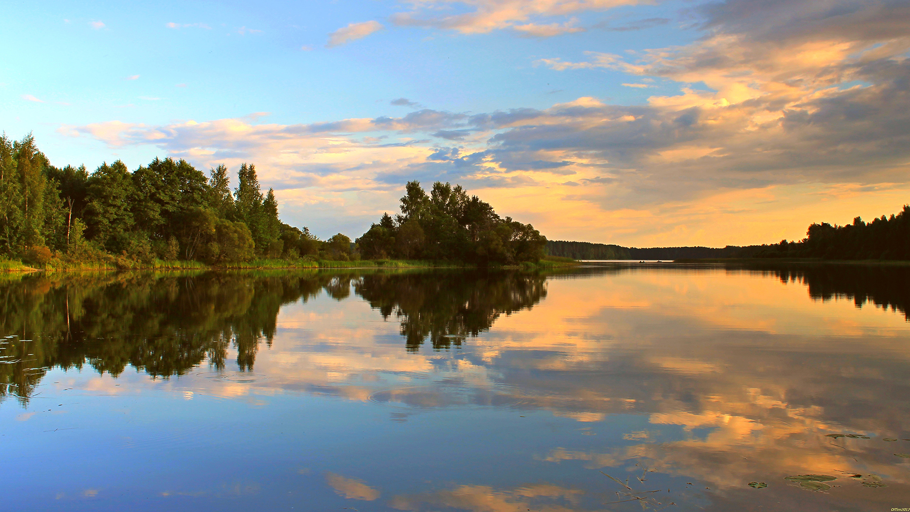
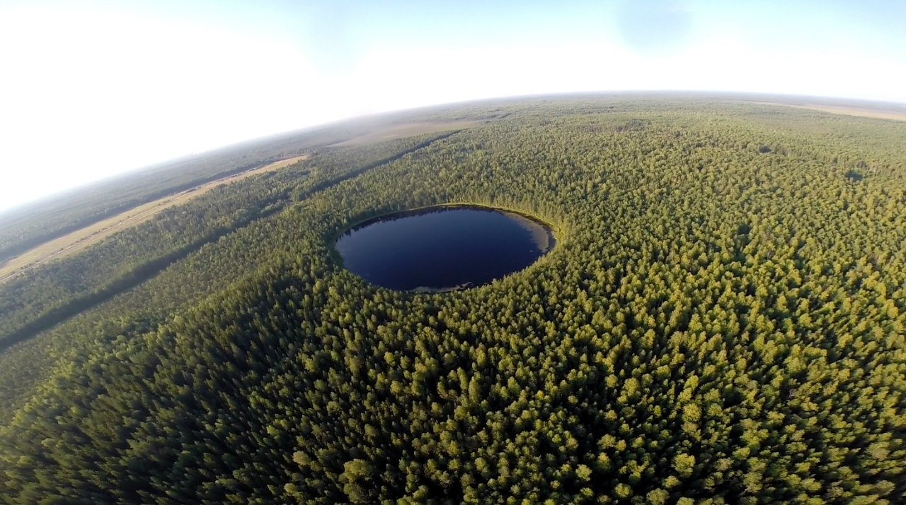
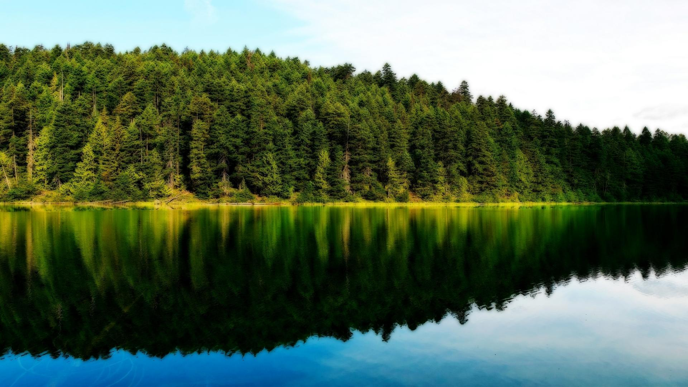

ЛЕГЕНДЫ
Мертвое озеро.
Происхождение и легенды
Происхождение названия
Путешествующие морские воины со Скандинавии, викинги, попали по реке Страче в край Голубых озер. Наше поозёрье им очень понравилось. Здесь они стали заниматься рыболовством, нести военную службу у местных князей. Викинги отмечались особым умением вести бой на воде, себя считали «морскими волками». Согласно их обычаям, останки умерших или погибших нужно было отдавать не земле, а воде. Вот и выбрали они для могильника небольшое бессточное озеро на левом берегу Страчи, возле старинной дороги Полоцк-Вильно, которую теперь называют «панской». Так она стала называться тогда, когда утратила свое значение гостинца и использовалась панами только для прогулок на бричках. Погибших во время боевых стычек воинов викинги хоронили с большой честью, на дно озера опускали в доспехах, останки умерших от старости, или болезни сжигали, а пепел также опускали на дно. Этот водоем назвали мертвым озером.
Версия ученых
Иногда природа и без вмешательства человека может внушать мистический ужас. В мире насчитывается не один десяток природных объектов со словом «мертвый» в названии. Есть такое место и в Беларуси — Мертвое озеро, входящее в комплекс Голубых озер, что на Мядельщине. Жуткое название водоем получил из-за того, что в нем практически полностью отсутствует жизнь. Окрестные леса также славятся гнетущей пустотой, звери тут встречаются крайне редко. Местные жители объясняют такое положение вещей древними проклятьями и жуткими легендами о затопленных городах. Ученые же далеки от мистики, по их утверждениям, мертвенность озера объясняется большим количеством сероводорода в воде. Несмотря на то, что его глубина составляет 24 метра,под озером есть уникальная 300-метровая полость, известная огромной концентрацией сероводорода, а также практически полным отсутствием циркуляции между водными слоями на глубине (Мёртвое озеро – озеро с Меромиктическим «характером», а это значит, что массы воды в нём, если смотреть в «привязке» к глубине, не перемешиваются… целыми столетиям! А лесные окрестности пусты из-за простой причины — зверям нечем поживиться на озерном берегу, вот они и обходят Мертвое озеро стороной. Именно поэтому, а также благодаря множеству легенд,озеро Мёртвое является одним из гланых «героев» экологической тропы «Голубые озёра» Национального парка Нарочанского.
Уфологии говорят об этом месте как о посадочной площадке НЛО. - Однажды я ночевал на берегу этого озера в палатке, - рассказывал местный житель Игорь Пастухов. - Меня разбудил железный скрежет, доносившийся со дна озера. Причем этот загадочный звук слышал не только я.
Мертвое любит попугать. Однажды туманным утром один из местных жителей проходил по берегу. Удивленный необычному по красоте туману, он на минуту остановился. А когда продолжил свой путь, то услышал оглушительный всплеск, будто в воду упало что-то огромное и тяжелое, так, что к берегу пошли волны. Тут же туман рассеялся.
Легенда о монахе-пилигриме
Шел с Полоцка в Вильно монах-пилигрим, который слышал про необычное озеро-могильник викингов, и решил посмотреть на него. Дело было под вечер. Богомолец заночевал на берегу. Не успел он окончить вечернюю молитву, как над водной гладью зазвенели звоночки и с середины озера стал подплывать к берегу сундук, наполненный драгоценностями. Монах обхватил его, поставил под сосну и стал разглядывать, что в нем находится. Вокруг никого. На минуту им овладела жадность – сокровищ хватит до конца безбедной жизни… И уже намерился укладывать их в мешок.
- Но это не мое. Мной овладел соблазн…
Дрожащей рукой он перекрестил сундук. В этот момент поднялся ветер и закрутил верх сосны, и вновь настала тишина. Потом сверху послышался мелодичный голос:
- Ты, благородный монах, сдержишь обещание. Тебе я даю важное поручение – возьми из сундука золотую пластину и отнеси ее в Вильно к образу Божьей Матери Остробрамской. Это подарок от Полоцкой земли, от Ефросиньи…
Монах выполнил поручение. Сосна с закрученным верхом стояла несколько сотен лет и была чудодейственной. К ней приходили одинокие и обиженные, делились своим горем и получали душевное облегчение. С годами старая сосна рухнула, а на ее месте выросла молодая с таким же верхом. Она также владеет силой снимать душевную тяжесть, чем часто пользуются прохожие и туристы. А озеро это любит тишину, гасит разные звуки и проглатывает эхо.
